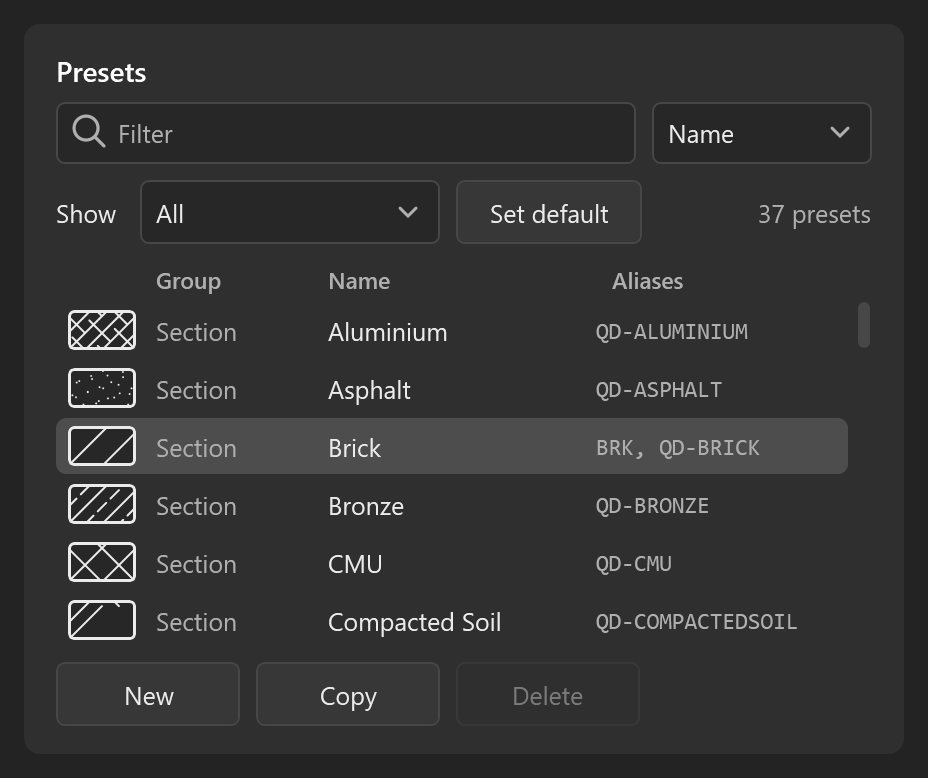
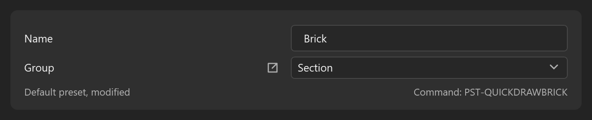
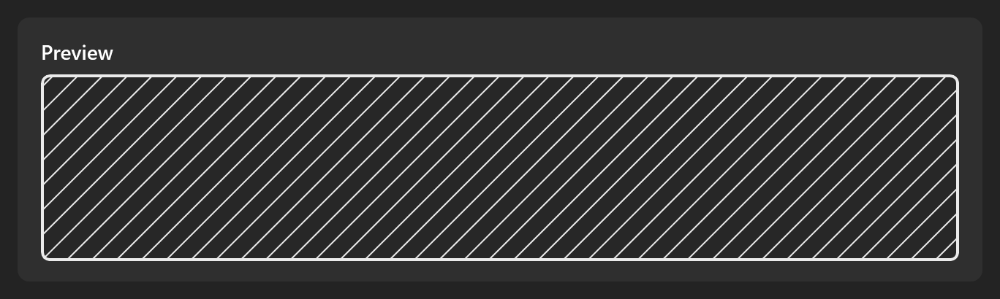
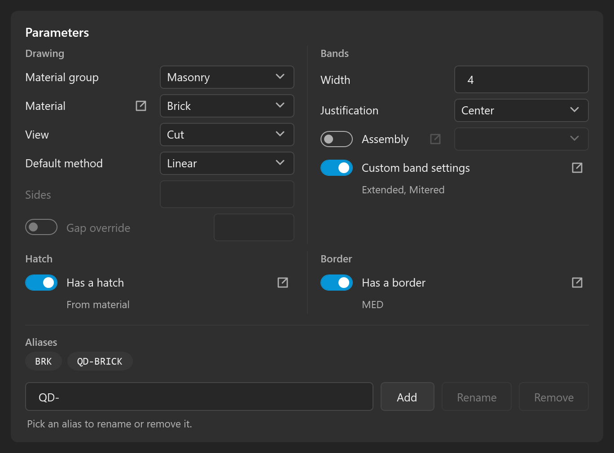
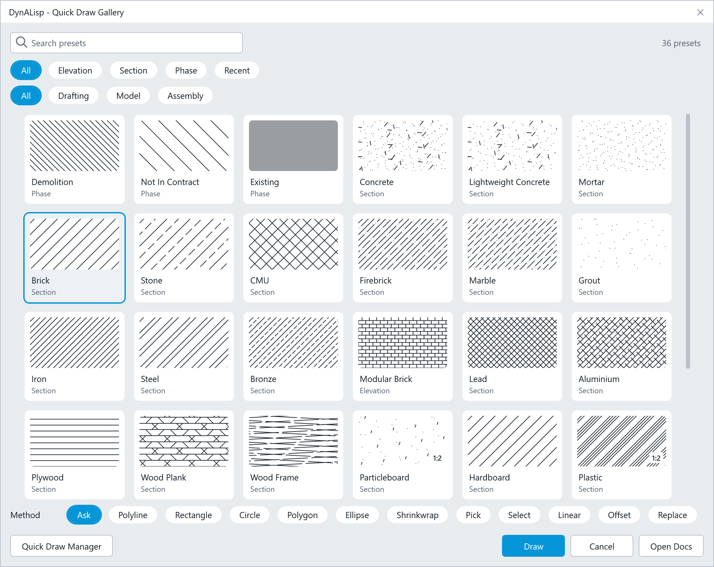
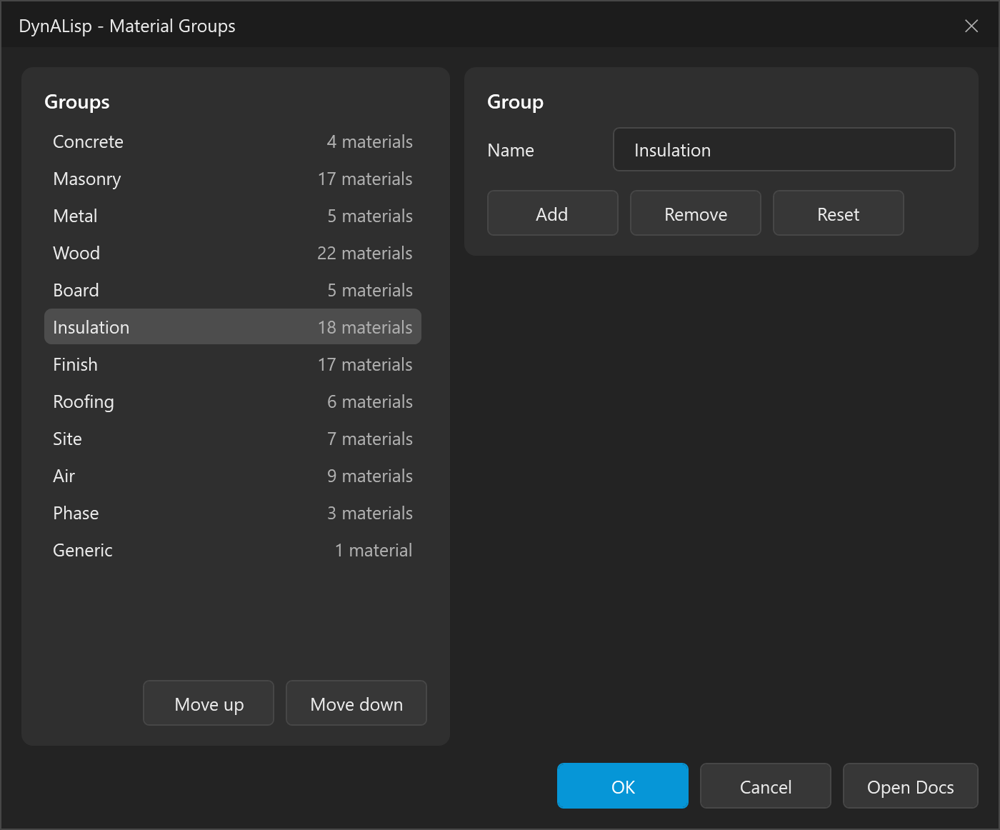

Dessin rapide (Quick Draw)
| Syntaxe | DYL-QUICKDRAW (fenêtre Quick Draw) + 35 commandes de préréglages – voir les commandes |
| Fenêtres | Préréglages d'assemblage (Assembly Presets), Réglages des bandes (Band Settings), Border Settings, Hatch Settings, Galerie de dessin rapide (Quick Draw Gallery), Groupes de préréglages (Preset Groups) |
| Fonctionne avec | Matériaux – ce dont chaque préréglage est fait Préréglages de hachures – la hachure de chaque matériau Clés de calque – les calques où il dessine Changer l'échelle du dessin – l'échelle de ses hachures Contour extérieur – le contour de sa méthode Shrinkwrap Simulation – simule les détails qu'il dessine Gestionnaire – le règle dans un onglet |
Description
Dessinez et hachurez d'un coup : le contour, son calque et sa hachure à la bonne échelle. Trente-cinq préréglages sont prêts, béton, brique, isolant, trames de phase, et vous faites les vôtres.
Utilisation
- Tapez un préréglage, QD-BRICK, ou choisissez-le dans la Galerie de dessin rapide.
- Choisissez comment le dessiner, puis tracez le contour : la hachure suit.
- Pour changer ou ajouter un préréglage, tapez Dyl-QuickDraw.
Fenêtre Quick Draw
Tapez Dyl-QuickDraw pour l'ouvrir.
Préréglages

- Filter – tapez une partie d'un nom pour raccourcir la liste. La liste à côté trie par nom ou par groupe.
- Show – tous les préréglages, ou un groupe. Set default ouvre la fenêtre sur ce groupe la prochaine fois.
- La liste – cliquez un préréglage pour le voir. Sélectionnez-en plusieurs pour les changer ensemble.
- New, Copy, Delete – ajoutez un préréglage, copiez celui qui est sélectionné, supprimez un des vôtres.
Nom et groupe

- Name – tel que la liste et la galerie le montrent.
- Group – où il est rangé. Le bouton à côté ouvre Preset Groups.
- Dessous : si le préréglage est tel que livré, modifié ou le vôtre, et la commande qui le dessine.
Aperçu

La hachure telle qu'elle sera dessinée, ou les couches d'un assemblage avec son épaisseur.
Paramètres

- Material – de quoi il est fait, ce qui donne sa hachure. Material group raccourcit la liste ; le bouton ouvre Matériaux. View : Cut en plan ou en coupe, Surface en élévation.
- Default method – comment il est dessiné (plus bas), ou demandé chaque fois.
- Sides – pour un polygone, son nombre de côtés. Gap override – pour Shrinkwrap, le plus grand écart qu'il ferme. Vide, demandé au dessin.
- Width et Justification – pour une bande : 100, ou 100,150,200 pour choisir chaque fois.
- Assembly – une bande de plusieurs couches, comme un mur (plus bas).
- Custom band settings – les bouts et les coins d'une bande : Réglages des bandes.
- Has a hatch – son calque et son allure : Hatch Settings.
- Has a border – garde le contour : Border Settings.
- Aliases – les noms courts qui le dessinent. Tapez-en un et cliquez Add ; choisissez-en un pour le renommer (Rename) ou le retirer (Remove).
Boutons
- Reset Selected – remet les préréglages sélectionnés tels que livrés. Reset All le fait pour tous les préréglages livrés ; les vôtres sont gardés.
- Draw enregistre et dessine le préréglage montré, Save enregistre, Cancel abandonne les changements.
- Open Docs – cette page.
Ses fenêtres
Préréglages d'assemblage (Assembly Presets)
Créez les murs, planchers et toits que Dessin rapide dessine en une bande de plusieurs couches. Les assemblages du code du bâtiment sont prêts, avec leurs cotes de résistance au feu et d'isolement acoustique, et la fenêtre additionne leur résistance thermique.

- Assemblies – filtrez, triez, ou montrez un groupe.
- Name, Group, Description – de l'assemblage.
- Border lines et Dividing lines – les lignes de ses faces, et entre ses couches.
- Variant – ses versions, chacune avec ses couches et ses cotes. New variant en ajoute une.
- Fire-resistance rating, Sound – tels que le code les donne.
- Exterior – quel bout des couches est dehors.
- Layers – chaque couche : son Material, son Thickness, et si elle est porteuse (Load-bearing), a une ossature (Framing : montants avec isolant entre), une épaisseur variable (Variable thickness) ou une faible perméance (Low permeance).
- Add, Remove, Move up, Move down, Flip – modifiez les couches. Sélectionnez-en plusieurs pour les changer ensemble.
- Preview – l'assemblage tel qu'il se dessine.
- Reset Selected, Reset All – rendent les assemblages du code.
Préréglages d'assemblage (Assembly Presets) →
Réglages des bandes (Band Settings)
Choisissez comment les bandes d'un préréglage de Quick Draw finissent, tournent leurs coins et alignent leur hachure. Un croquis montre chaque choix.

- Scale by width – la hachure grandit avec la largeur de la bande.
- Origin on line – où le motif commence sur la ligne ; Pick... le trouve sur un échantillon.
- Hatch aligned to – la ligne, ou le dessin pour un motif qui continue d'un coin à l'autre.
- Ends – Square, Open, Extended, Round ou Angled.
- Corners – Mitered, Beveled, Round ou Lapped.
- Joints – une ligne entre les segments, ou aucune.
Voyez les croquis dans Dessin rapide – Bouts et coins.
Réglages des bandes (Band Settings) →
Border Settings
Choisissez le calque, la couleur, le type de ligne, l'épaisseur et la transparence du contour d'un préréglage de Quick Draw, ou d'une couche d'un assemblage.

Hatch Settings
Choisissez le calque, la couleur, le type de ligne, l'épaisseur et la transparence de la hachure d'un préréglage de Quick Draw, ou d'une couche d'un assemblage. Le matériau lui-même ne change pas.

Galerie de dessin rapide (Quick Draw Gallery)
Choisissez un préréglage de Quick Draw à son allure : une tuile pour chacun, sa hachure telle qu'elle s'imprime.

Galerie de dessin rapide (Quick Draw Gallery) →
Groupes de préréglages (Preset Groups)
Classez vos préréglages et matériaux en groupes : Wall, Section, Phase pour les préréglages, Masonry, Wood, Insulation pour les matériaux.


Groupes de préréglages (Preset Groups) →
Échelle du dessin
Une hachure est réglée pour 1:1. Avec Adaptive scaling, elle grandit avec l'échelle du dessin : x50 à 1:50. Réglez l'échelle avec Changer l'échelle du dessin. Une hachure déjà dessinée garde son échelle.
Méthode par défaut
| Méthode | Contour |
|---|---|
| Polyline, Rectangle, Circle, Polygon, Ellipse | Dessinez-le comme d'habitude. |
| Shrinkwrap | Sélectionnez des objets : un contour les entoure (Contour extérieur). |
| Pick internal points | Cliquez dans des zones fermées. |
| Select closed objects | Utilisez des contours déjà dessinés. |
| Linear | Tracez une ligne : une bande de la largeur la suit, sa hachure tournant avec elle. |
| Offset | Choisissez des objets et un côté, comme avec DECALER : une bande suit chacun. |
| Replace hatches | Donnez le matériau à des hachures déjà dessinées. |
Bouts et coins
Comment les bandes de Linear et Offset finissent et tournent, réglé dans Réglages des bandes, ou avec Ends et Corners en dessinant.
Extrémités
Coins
Joints et hachure
Assemblages
Un assemblage dessine une bande de plusieurs couches côte à côte, comme un mur : gypse, montants et isolant, revêtement intermédiaire, lame d'air, brique. Cochez Assembly et choisissez-le ; créez-le dans Préréglages d'assemblage.

- Chaque couche a son matériau ; toutes les couches tournent les coins ensemble.
- Flip inverse les couches, pour dessiner depuis l'autre face.
Limites connues
- Quelques motifs (CONCRETE_C, WOOD_*...) ont besoin de leur fichier de motif dans les dossiers d'AutoCAD.
- Un calque déjà là garde son allure, sauf si vous dites de le mettre à jour (voir Clés de calque).
Noms des commandes et alias
Les noms courts sont des alias de la commande : modifiez-les dans Dyl-Suite. Les rangées marquées ↳ sont ses variantes, lancées par leur nom court.
| Commande | Alias | Nom |
|---|---|---|
| Dyl-QuickDraw | – | Quick Draw |
| ↳ QDG | – | Quick Draw Gallery |
| ↳ QD-DEMO | – | Quick Draw Demolition |
| ↳ QD-XNOT | – | Quick Draw Not In Contract |
| ↳ QD-EXST | – | Quick Draw Existing |
| ↳ QD-CONCRETE | – | Quick Draw Concrete |
| ↳ QD-LIGHTCONCRETE | – | Quick Draw Lightweight Concrete |
| ↳ QD-MORTAR | – | Quick Draw Mortar |
| ↳ QD-BRICK | – | Quick Draw Brick |
| ↳ QD-STONE | – | Quick Draw Stone |
| ↳ QD-CMU | – | Quick Draw CMU |
| ↳ QD-FIREBRIC | – | Quick Draw Firebrick |
| ↳ QD-MARBLE | – | Quick Draw Marble |
| ↳ QD-GROUT | – | Quick Draw Grout |
| ↳ QD-IRON | – | Quick Draw Iron |
| ↳ QD-STEEL | – | Quick Draw Steel |
| ↳ QD-BRONZE | – | Quick Draw Bronze |
| ↳ QD-LEAD | – | Quick Draw Lead |
| ↳ QD-ALUMINIUM | – | Quick Draw Aluminium |
| ↳ QD-PLYWOOD | – | Quick Draw Plywood |
| ↳ QD-WOODPLANK | – | Quick Draw Wood Plank |
| ↳ QD-WOODFRAME | – | Quick Draw Wood Frame |
| ↳ QD-PARTICLEBOARD | – | Quick Draw Particleboard |
| ↳ QD-HARDBOARD | – | Quick Draw Hardboard |
| ↳ QD-PLASTIC | – | Quick Draw Plastic |
| ↳ QD-LOOSEINSULATION | – | Quick Draw Loose Insulation |
| ↳ QD-SPRAYINSULATION | – | Quick Draw Spray Insulation |
| ↳ QD-RIGIDINSULATION | – | Quick Draw Rigid Insulation |
| ↳ QD-GYPSUM | – | Quick Draw Gypsum |
| ↳ QD-PLASTER | – | Quick Draw Plaster |
| ↳ QD-COMPACTEDSOIL | – | Quick Draw Compacted Soil |
| ↳ QD-TOPSOIL | – | Quick Draw Topsoil |
| ↳ QD-UNDISTURBEDSOIL | – | Quick Draw Undisturbed Soil |
| ↳ QD-SAND | – | Quick Draw Sand |
| ↳ QD-ASPHALT | – | Quick Draw Asphalt |
| ↳ QD-GRAVEL | – | Quick Draw Gravel |
| ↳ QD-CRUSHEDSTONE | – | Quick Draw Crushed Stone |